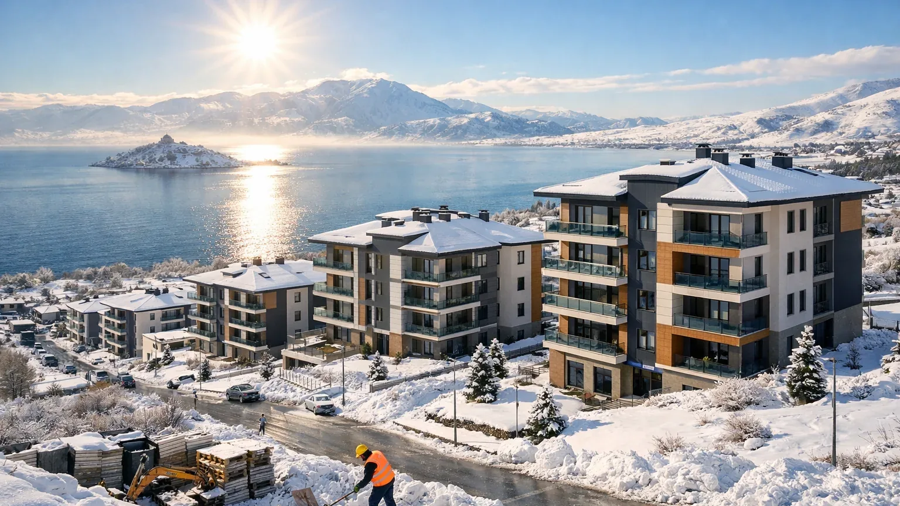

Van Depremi 2011 – 15 Yıl Sonra Neler Öğrendik?
23 Ekim 2011 saat 13:41'de Van-Tabanlı'da Mw 7.2 büyüklüğünde deprem oldu. 604 kişi vefat etti. 15 yıl sonra Van'da hala izler var. Bu deprem Türkiye'ye neyi öğretti?
Deprem Ne Oldu?
23 Ekim 2011 Pazar, 13:41. Van'ın kuzeyindeki Tabanlı köyü yakınında, derinlik 7-10 km. Erciş ilçesinde en büyük hasar yaşandı — 11 bina çökmüş. Yüzlerce enkaz altında kalan oldu. Yaşanan soğuk hava (gece eksi 10°C'ye düşen sıcaklıklar) kurtarma sürecini zorlaştırdı.
9 Kasım'daki İkinci Deprem
9 Kasım 2011'de Mw 5.6 bir artçı, asıl depremde hasar görmüş Bayram Oteli'nin tamamen çökmesine sebep oldu. Bu artçı 40+ kişinin hayatını kaybettiği bir felaket oldu. Bu olay artçıların "küçük" olduğunu düşünmeyin, hasarlı binaları yıkar dersini bıraktı.
Soğuk Hava ve Tahliye Zorluğu
Ekim sonu Doğu Anadolu'da sıcaklık eksiye düşer. Enkazdan çıkarılanlar üşüdü, çadır kentler ısınamadı. Bu deneyim sonrası AFAD Kış Acil Eylem Planı geliştirdi: eksi 20'ye kadar ısıtma kapasitesi, termal battaniyeler, sıcak içecek dağıtımı.
Yapı Kalitesi Zayıflığı
Van'daki çöken binaların %80'i kaçak inşaattı — ruhsatsız veya plan dışı. Deprem yönetmeliğine uyulmamıştı. Bu olay Türkiye'nin yapı denetim reformunu hızlandıran etmendir.
Van'ın Yeniden Yapımı
Van Büyükşehir Belediyesi ve TOKİ ortaklığıyla 15.000+ yeni konut inşa edildi. "Depremzede Evleri" projesi hala örnek bir kentsel dönüşüm modeli olarak anlatılıyor. Bugün Van merkezde eski binaların %60'ı yenilenmiş durumda.
2026'da Van'da Durum
2026 itibarıyla Van, Doğu Anadolu'nun en çok yenilenmiş şehri. Yeni binaların %100'ü 2019 yönetmeliğine göre. Yine de köy yerleşimlerinde yığma ve kerpiç yapılar dikkat gerektirir. Van deprem sayfamızda detaylı bilgi var.